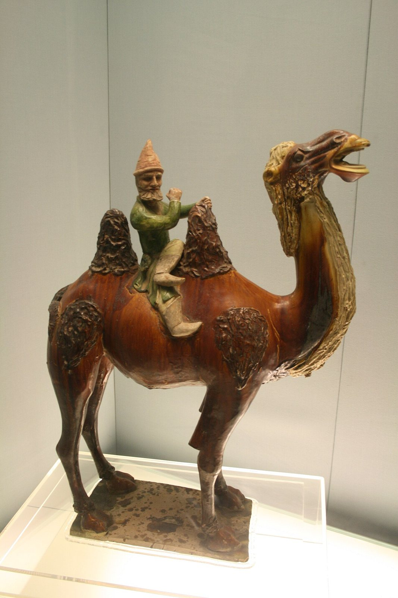
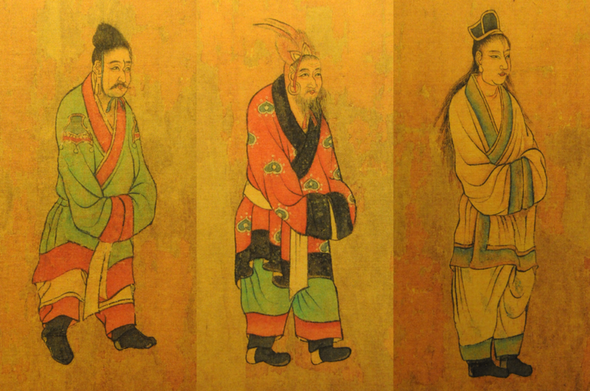
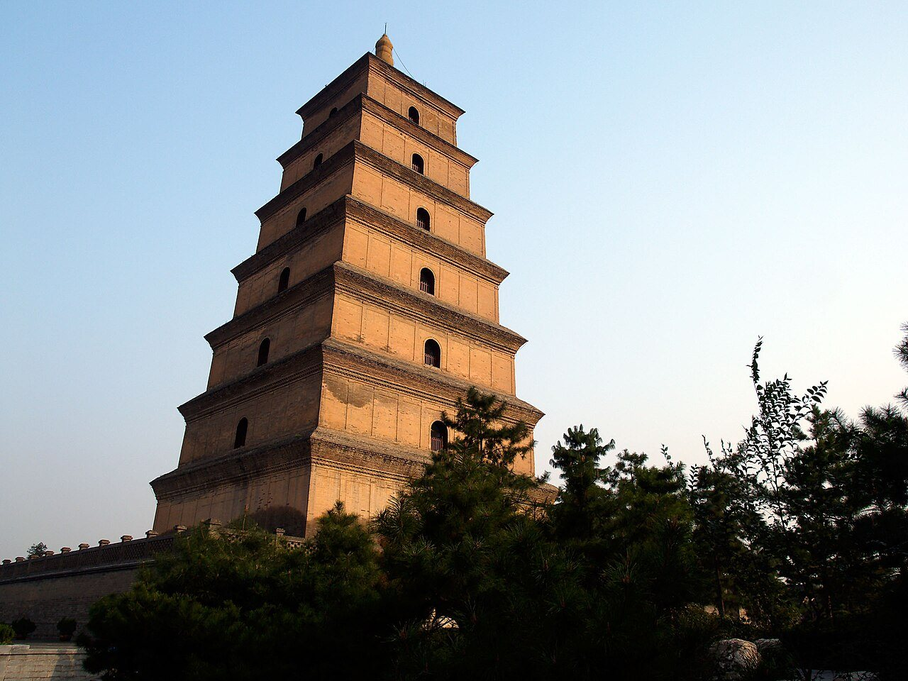

사진 · 당삼채 낙타와 서역인
중학교 역사① · 3단원 세계 종교의 확산과 지역 문화의 발전
장안수·당과 동아시아 국제 질서
당삼채 낙타와 서역인 · 사진 Gary Lee Todd · CC0
“당은 어떻게 여러 나라 사람이
당은 어떻게 여러 나라 사람이
모이는 곳이 되었을까?
사실수의 통일, 당의 장안
해석사람과 물건이 모인 까닭
확장오늘의 세계 도시와 견주기
589 → 618
사실수가 남북조를 통일하다
해석대운하와 고구려 원정
확장당이 수의 틀을 이어받다
당이 나라를 꾸린 틀
율령법과 제도
3성 6부중앙 관청
균전제땅 나누기
과거시험으로 관리 뽑기

사진 · 그림 속 사신들은
왜 이곳에 왔을까?
그림 속 사신들은
왜 이곳에 왔을까?
누가당의 화가가 그렸다고 전한다
누구에게당의 황제와 신하들
사실·주장‘조공하러 온 사람들’?
「왕회도」 가운데 삼국의 사신(전 염립본) · 타이베이 고궁박물원 · 퍼블릭 도메인
조공과 책봉
사실사신과 선물, 왕의 칭호
해석정말 위아래 관계였을까
확장무역과 외교의 약속

사진 · 현장은 왜 인도까지
걸어갔을까?
현장은 왜 인도까지
걸어갔을까?
사실17년 동안의 여행
해석가져온 경전과 번역
확장『서유기』의 삼장 법사
시안 대안탑 · 사진 Alex Kwok · CC BY-SA 2.5
빈공과
사실외국인을 위한 과거 시험
해석신라의 최치원
확장당의 관리가 된 외국인들
장안에 모인 사람들
소그드 상인비단길
신라 유학생국학·빈공과
일본 견당사제도와 불교
여러 종교불교·경교·조로아스터교
755
사실안사의 난
해석무엇이 무너졌을까
확장907년 당의 멸망
오늘의 장안은
어디일까?
사실세계 여러 나라 사람이 사는 도시
해석열린 도시의 조건
확장도시가 문을 닫으면
“당이 여러 나라 사람이 모이는 곳이 된 까닭은 이다.